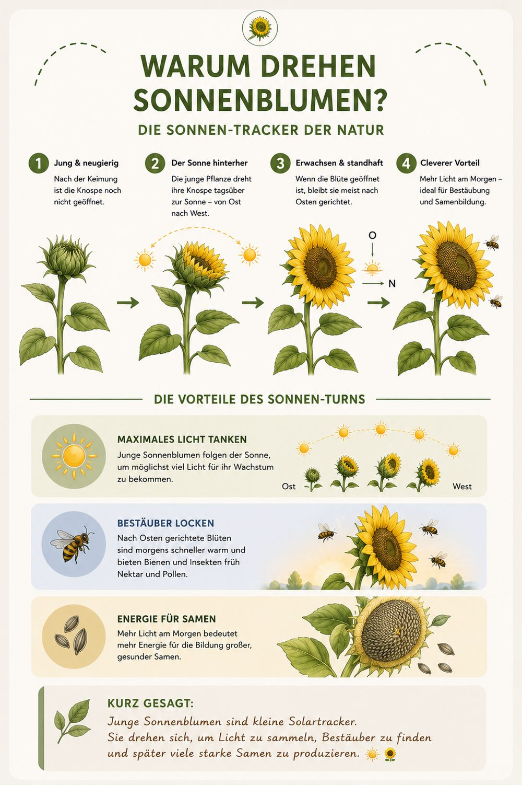

Warum drehen Sonnenblumen?
Die Sonnen-Tracker der Natur.
👉 Junge Sonnenblumen folgen tagsüber mit ihren Köpfen der Sonne von Ost nach West – und drehen sich nachts wieder zurück. Möglich macht das ein ungleiches Wachstum der beiden Stängelseiten. Diese tägliche Wanderung (der Heliotropismus) bringt mehr Licht und lockt mehr Bestäuber an. Ausgewachsen bleiben die Blüten dann meist nach Osten gerichtet.